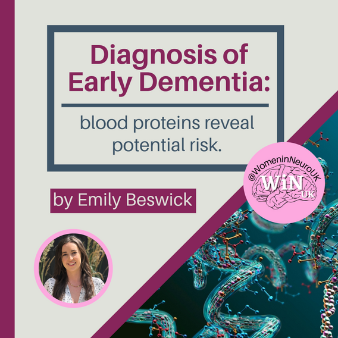

HELLO WINUK COMMUNITY,
Pride Month is here: at WiNUK we believe that neuroscientists should
be fairly acknowledged for their work and ideas, without facing
disadvantages due to biases against sex, gender identity, sexual
orientation or other protected characteristics.
We are proud to uplift women including trans women in the
neuroscience community. We are proud to collaborate to provide
tailored support for our non-binary and gender non-conforming allies
who may also encounter sexism and/or gender biases in the workplace.
We are proud to provide education and advice to enable all members
of the neuroscience community to contribute towards inclusive
workplaces to the benefit of all.
This month, we are especially proud to be collaborating with The
Faculty of Brain Sciences’ LGBTQ+ Committee at University College
London in coorganising a panel discussion on issues impacting LGBTQ+
researchers in academia, including interactive audience Q&A. We’re
keen to hear insightful discussion on navigating neuroscience with
gender and queer identity intersections. This session will be part
of the second Annual LGBTQ+ ECR Research Showcase on 26th June 2024.
If you are interested in attending this event, in-person or
virtually, please contact
womeninneuroscience.uk@gmail.com
or
fabio.rodrigues@ucl.ac.uk, and find more information
here.
Stay tuned to WiNUK’s social media for more information about the
fantastic panellists!
Recognising the achievements of LGBTQ+ figures in neuroscience is
necessary to set role models, highlight their impact on science, and
contribute to an inclusive and diverse workplace. We’re committed to
being an organisation which raises awareness and seeks to create
safe spaces for minorities in this field.
SOCIALS RECAP
Celebrating reaching 1K followers on Instagram, X, and
LinkedIn!
Thanks to each of our followers for the support and engagement on
our social media platforms! WiNUK has grown in the last two years,
and so have its social media platforms. From addressing critical
topics surrounding neurological disorders to offering glimpses
into the daily lives of neuroscientists, providing valuable
insights for postgraduate applications, and delving into the
intricacies of equity in neuroscience, our social media posts have
resonated with individuals from diverse backgrounds and stages of
life, united by a shared commitment to gender equity in the field.
A special acknowledgement is due to our dedicated social media
team, content creators, and graphics team for their tireless
efforts in crafting accessible and impactful content.
Let’s continue to push our message of the importance of gender
equity across neuroscience workplaces, research, and treatment!

SOCIALS
MS Awareness Week
The last week of April was MS Awareness Week. MS
disproportionately affects women, highlighting the need for
research to focus on sex differences in neurological diseases. We
shared educational content during the week as well as an
informative video on our TikTok.
PYLT Series
WiNUK founder - Lizzie English, will be taking over this month’s
‘Present Your Lab Technique’ (PYLT) series.
Keep posted on our socials this month, as she’ll introduce single
molecule biochemistry assays!
Day in the Life (DITL)
Our Day in the Life series continued with our first external
feature from MRes student Amy. Check out our Instagram and TikTok
to see how a Master’s student spends her day in the lab. Following
on from this, our Instagram Admin Rachel took over to share her
day in the life as a third-year PhD student.
-
May is the awareness month for mental health, stroke and
Huntington's disease. Make sure to keep an eye out for the
upcoming informative content across WiNUK socials!
-
To celebrate the International Association for Pain (IASP)
designating 2024 as the global year for recognition of sex
disparities in pain, we will have a series of posts on our
socials. We will explore why chronic pain is such a global
burden, our reliance on opioids and address the ‘Gender Pain
Gap’.
BLOG
Fancy writing for the WiNUK blog , but not sure what to write about?
Not to worry - the editors regularly put together a collection of
prompts to get you started.
REALITY
Section Editor: Lauren Wallis
- Is Overworking a Requirement in Academia?
- Tackling Impostor Syndrome
RESEARCH
Section Editor: Julia Dabrowska
REVIEW
Section Editor: Rebecca Pope
-
Book Review: ‘Why We Sleep: Unlocking the Power of Sleep and
Dreams’ by Professor Matthew Walker
- Review an event, lecture or discussion!
BLOG ‘MONTH IN REVIEW’
This month, our blogs delved into historical medical mysteries,
tackled accessibility in conferences, and highlighted inspiring
journeys in neuroscience.
We explored the ‘immortal life’ of Henrietta Lacks,
‘the woman behind the cells’, shining a light on the
ethical disaster surrounding the HeLa cell line.

We discussed the exciting potential for blood proteins to act
as predictors of dementia!
We also have some exciting articles coming very soon, so keep
your eyes peeled for:
An interview with Dr Katelynn Boerner, researcher and
psychologist at the British Columbia Children’s Hospital,
chatting about producing more inclusive research practices,
particularly for gender diverse and neurodiverse young
people with chronic pain.
A very important piece about the sex and gender disparities
in neuroscience, and why organisations like WiNUK are
essential.
If you’ve missed these thought-provoking articles, visit the blog
to catch up:
Blog | Womeninneurouk
(womeninneuroscience.wixsite.com/winuk/blog)
SUPPORT WiNUK VOLUNTEERS
One of our volunteers, Storm, is raising funds for Mental Health UK,
in support of Mental Health Awareness Month!
The company she works at will be matching all donations, and so far,
they’ve already raised £1000! If you’re able to contribute, you can
donate here:
https://fundraising.mentalhealth-uk.org/fundraisers/stormjohnson/move-it-for-mental-health
MEET OUR NEW VOLUNTEERS!
WiNUK has the pleasure of introducing 3 new volunteers, covering
different positions in the organisation. We look forward to your
ideas and projects, and welcome to the team!
- Charlotte Bell: Business Strategy Advisor
- Storm Johnson: Sponsorships and Grants Officer
- Becky Csöndör: In-Person Events Officer


 19
19